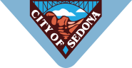
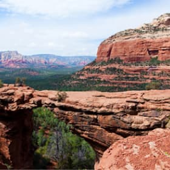

Welcome to Sedona


фото и видео
не можете решиться на путешествие
из-за курса?
Фотографии помогут вам забыть о политике и экономике.
Photos

неродные просторы
1350

местная растительность
143

Дорога на север
96
 Мост дьявола
254
Video
Все еще сомневаетесь?
Смотрите видеопрезентацию и
скорее за билетами, пока они
не подорожали в очередной раз!